Entregável: Checklist de abertura de loja + painel de KPIs · ▶ Gravação da aula
Apostila
Como o programa funciona
São 16 aulas de 1 hora, duas por semana, sempre às quartas e quintas às 19h, 100% on-line e com gravação publicada ao final de cada encontro. O programa vai até 14 de outubro.
Ele é dividido em dois módulos fechados e sequenciais: primeiro TikTok Shop, das aulas 01 a 08, depois Mercado Livre, das aulas 09 a 16.
O par da semana funciona como uma coisa só: na quarta a gente constrói o conceito e começa o entregável, na quinta fecha e testa. Por isso a tarefa entre quarta e quinta é curta, e a tarefa da quinta para a quarta seguinte é a maior.
Cada aula gera um entregável. Ele é construído ao vivo sobre contas reais e sai da aula como um modelo preenchido, pronto para você repetir no cliente que quiser. Você não precisa ter uma conta própria para acompanhar nem para produzir o entregável.
As contas que você vai ver
O programa usa dois tipos de conta, e o motivo é prático:
| Conta | Para que serve | Aparece em |
|---|---|---|
| Conta inicial, já aprovada | Mostrar o setup completo sem esperar liberação da plataforma: cadastro de produto, envio, devolução, showcase, afiliados | Aulas 01 e 02 |
| Contas em operação, acima de R$ 1 milhão de faturamento | Ver diagnóstico, curva de produtos, campanhas, creators e leitura de dados em escala real | Aulas de análise, conforme o tema |
A escolha depende do que está sendo ensinado. Setup se aprende numa conta que já passou por tudo. Leitura de resultado só faz sentido em operação com volume, senão o número não diz nada.
E toda aula termina com o mesmo ritual: ATA publicada na página da aula aqui no site, gravação e arquivos anexados no mesmo lugar, e auditoria das tarefas da semana anterior na aula seguinte.
A ordem não é aleatória. O TikTok Shop vem primeiro porque é onde a curva de aprendizado é mais rápida e onde o resultado aparece em semanas, não em meses. O Mercado Livre entra depois, com a operação já rodando.
O baseline do dia zero
Regra que vale para todo projeto que você tocar: antes de mexer em qualquer coisa, congele o retrato da conta do cliente. Sem isso, no fim do trabalho não existe prova de resultado, só impressão, e a conversa de renovação vira opinião contra opinião.
O que registrar no dia 1: GMV, pedidos, ticket médio, número de creators vinculados e taxa de cancelamento, sempre com a data da coleta anotada. Se a loja ainda não vende no canal, o baseline é zero, e isso também precisa estar escrito, porque é a partir dele que você mostra o que construiu.
O que muda do Mercado Livre para o TikTok Shop
A diferença não é de plataforma, é de jornada de compra.
| Mercado Livre | TikTok Shop | |
|---|---|---|
| Jornada | Intenção, o comprador busca | Descoberta, o conteúdo interrompe |
| Gatilho da venda | Palavra-chave | Vídeo, live ou creator |
| Unidade de trabalho | Anúncio | Conteúdo e oferta |
| Quem vende | Sua página | Você, seus creators e seus afiliados |
| Custo da plataforma | Comissão variável por categoria | Comissão + frete + taxa fixa por item |
Quem tenta operar TikTok Shop com lógica de marketplace publica catálogo, espera busca e conclui que não funciona. O canal responde a volume de conteúdo, não a otimização de ficha.
O que o cliente precisa ter antes de abrir a loja
Esta é a primeira lista que você vai mandar para qualquer marca que quiser vender no canal. Metade das reprovações de cadastro está aqui:
- CNPJ ativo e cartão CNPJ
- Dados bancários no mesmo CNPJ da loja: conta em nome diferente reprova
- Documento de identidade do responsável legal
- Definição da categoria de produto que será vendida
- Se a categoria for regulada (cosmético, suplemento, saúde, eletrônico), a documentação específica dela
- Perfil do TikTok da marca já criado
Guarde essa lista. Ela vira o primeiro e-mail de onboarding do seu cliente. Para a parte bancária, que é a que mais reprova, mande o guia pronto: Como cadastrar a conta bancária no TikTok Shop.
Setup da loja, passo a passo
Vamos percorrer o cadastro na tela, campo a campo, para você ver cada armadilha antes de fazer isso valendo com um cliente.
Os itens 1 a 3 são o cadastro em si, e é onde a conta nova para e espera a plataforma. Os itens 4 a 7 só existem com a conta já aprovada, e é por isso que eles são demonstrados na conta inicial: assim você vê a tela real hoje, e não daqui a duas semanas.
- Cadastro do seller, com CNPJ e dados bancários batendo com a razão social
- Verificação de identidade e documentos, que costuma ser o gargalo de prazo
- Categoria de produto e checagem de restrição: algumas exigem documentação adicional
- Cadastro de produtos com foto, variação, estoque e preço
- Configuração de envio, prazos e política de devolução
- Vinculação do perfil do TikTok à loja e ativação do showcase (a vitrine dentro do perfil)
- Habilitação do programa de afiliados
O prazo não é seu, nem do cliente. A aprovação de conta e de categoria fica com a plataforma e costuma levar de alguns dias a duas semanas, dependendo da documentação. Por isso, em qualquer projeto, o cadastro é a primeira coisa a disparar, não a última.
O que fazer enquanto a conta é analisada
A pergunta que o cliente vai te fazer é "e agora, esperamos?". A resposta é não, e essa é uma das primeiras entregas de valor que você dá a ele:
| Frente | Avança sem loja aprovada |
|---|---|
| Precificação | Tabela de preço e desenho dos kits, em planilha |
| Conteúdo | Roteiros gravados e prontos para publicar |
| Creators | Lista mapeada e mensagem de convite pronta |
| Live | Roteiro e calendário definidos |
Quando a aprovação sai, é só publicar o que já está pronto. Quem espera a aprovação para começar a pensar perde três semanas. É exatamente esse o desenho das Aulas 02 a 05.
O custo da plataforma, que não é uma taxa só
O erro mais comum é falar em "a taxa do TikTok Shop" como se fosse um número único. São três coisas somadas, e desde 14/07/2026 duas delas mudaram:
| Componente | Até R$ 49,99 | De R$ 50,00 em diante |
|---|---|---|
| Comissão | 10% | 6% |
| Frete TikTok Shop | 6% | 6% |
| Taxa fixa por item | R$ 4,00 | R$ 6,00 |
| Custo total | 16% + R$ 4,00 | 12% + R$ 6,00 |
Até 14/07/2026 a regra era mais simples: 6% de comissão mais R$ 4,00 por item, para qualquer preço. Somado ao frete, dava os 12% que muita gente ainda repete por aí. Hoje isso só vale de R$ 50,00 para cima.
Essa régua já está montada na planilha de precificação, que é o material da Aula 02 e a que você manda para o cliente preencher. Vale abrir agora para ver onde cada número entra.
Não existe degrau em R$ 50, e isso é de propósito
A primeira reação de quem vê duas faixas é procurar o salto, e imaginar que vale subir o preço para cruzar o limiar. Faça a conta:
- Um produto de R$ 50,00 pela faixa de baixo: 16% de R$ 50,00 são R$ 8,00, mais R$ 4,00 de taxa fixa, dá R$ 12,00
- O mesmo produto pela faixa de cima: 12% de R$ 50,00 são R$ 6,00, mais R$ 6,00 de taxa fixa, dá R$ 12,00
Chega no mesmo valor pelos dois caminhos. A plataforma escolheu o corte exatamente no ponto em que as duas contas se encontram, então nada salta em R$ 50,00. Subir de R$ 47,00 para R$ 50,00 só para "mudar de faixa" não traz ganho nenhum além do que qualquer aumento de preço já traria.
O que realmente pesa é a taxa fixa em ticket baixo
O custo de plataforma em percentual do preço, na régua atual:
| Preço de venda | Custo total | % do preço |
|---|---|---|
| R$ 20,00 | R$ 7,20 | 36% |
| R$ 30,00 | R$ 8,80 | 29% |
| R$ 40,00 | R$ 10,40 | 26% |
| R$ 50,00 | R$ 12,00 | 24% |
| R$ 80,00 | R$ 15,60 | 20% |
| R$ 150,00 | R$ 24,00 | 16% |
| R$ 300,00 | R$ 42,00 | 14% |
A curva é essa: quanto menor o ticket, maior a mordida, porque a taxa fixa não diminui junto com o preço. Um produto de R$ 20 entrega 36% do preço para a plataforma antes de contar produto, embalagem e creator. Vender item avulso barato nesse canal quase nunca fecha.
É por isso que kit, aqui, não é só alavanca de ticket médio: é defesa de margem. Ele sobe o valor sobre o qual a taxa fixa é diluída.
Um ponto a confirmar no Seller Center: se a taxa fixa é cobrada por unidade vendida ou por linha do pedido. Se for por linha, o kit dilui de verdade. Se for por unidade, o ganho do kit vem do percentual, não da taxa fixa. Cheque isso antes de montar a tabela de preço.
Isso importa porque, além do custo de plataforma, o canal tem custos que o marketplace tradicional não tem:
- Comissão do creator ou afiliado, definida por você
- Custo de amostras enviadas para creators
- Cupons e campanhas da plataforma
- Mídia paga, quando houver
Uma operação que só considerou a comissão descobre a margem real tarde demais. A Aula 02 recalcula isso inteiro.
O funil aqui tem três andares, não dois
A leitura mais comum do mercado divide tudo em dois blocos: branding constrói marca, performance gera conversão. Falta o andar do meio, e é justamente onde a decisão acontece.
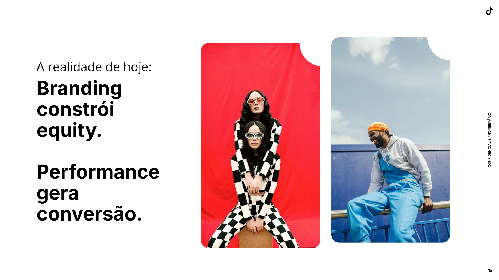
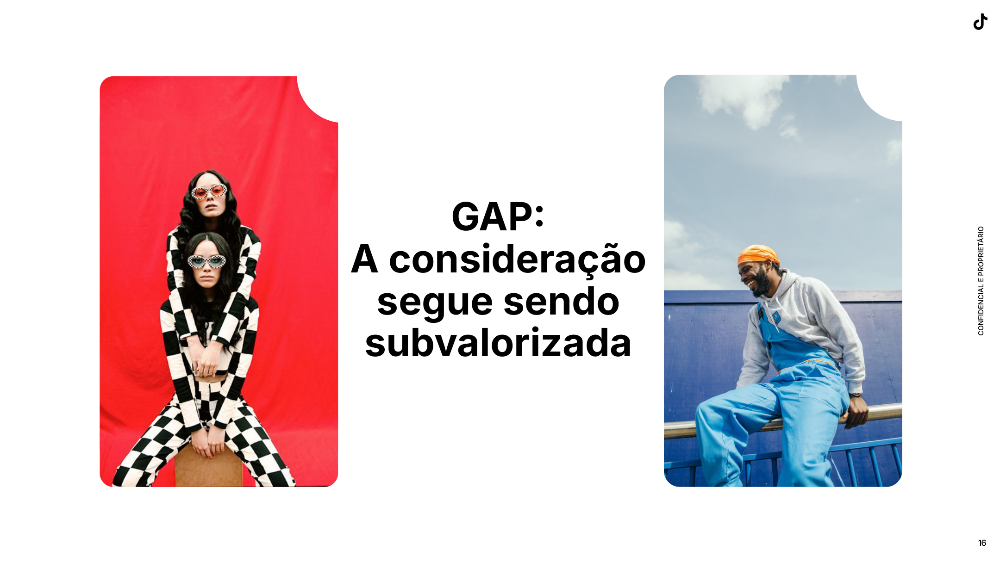
Segundo a McKinsey, 87% das pessoas chegam indecisas à jornada de compra, sem uma marca definida. Elas não estão só descobrindo, e também não estão prontas para comprar: estão considerando. Esse é o andar que quase ninguém trabalha de propósito.
E é o andar em que este canal é forte. Pesquisa da Kantar sobre jornada cross-media coloca o TikTok como a plataforma de mídia mais influente durante a fase de consideração, acima de todas as outras.
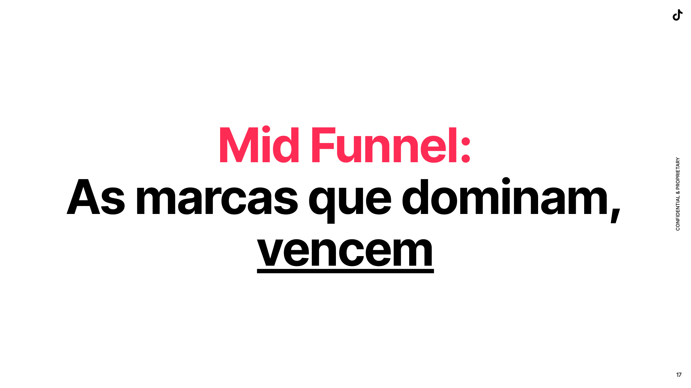
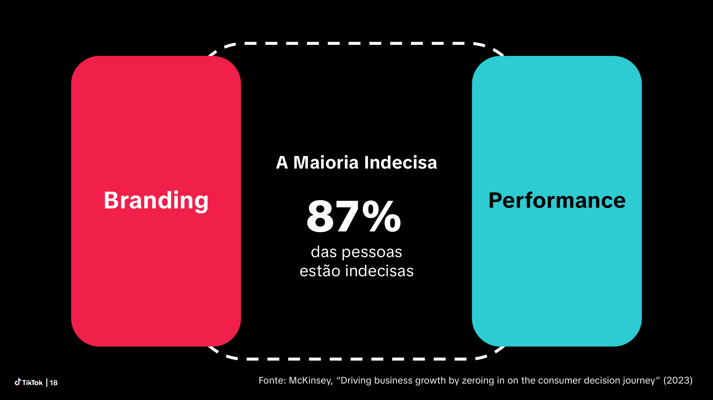
Trabalhar consideração puxa o funil inteiro
Os dados de marketing science da TikTok mostram que otimizar para audiências de consideração, em vez de só para alcance, melhora todos os andares:
| Efeito | Comparado a trabalhar só awareness |
|---|---|
| Ad recall | 2x |
| Lift em consideração | 3x |
| Lift em advocacy de marca | 2x |
| Ver detalhes do produto | 5x mais provável |
| Adicionar ao carrinho | 7x mais provável |
| Iniciar o pedido | 6,4x mais provável |
A leitura prática para quem vende: conteúdo que gera consideração não é "conteúdo bonito que não vende". Ele é o que faz o clique do fundo de funil acontecer depois, e mais barato.
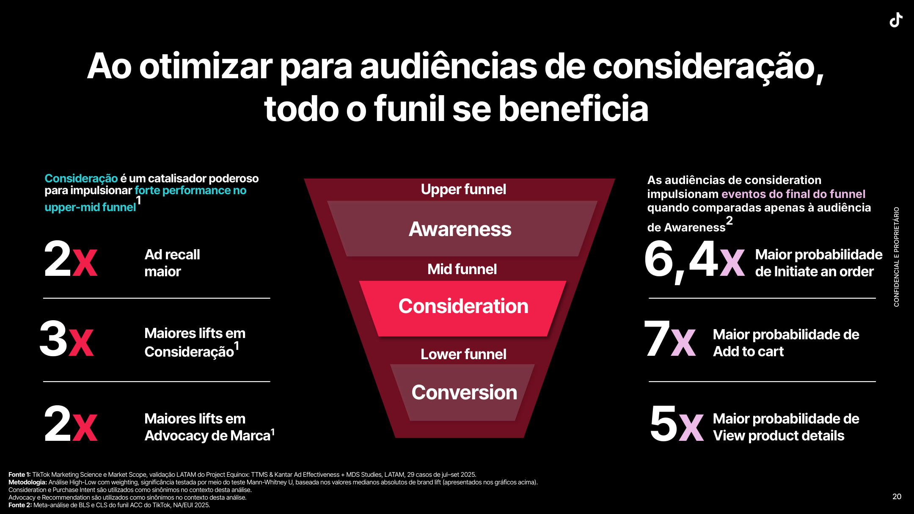
Por que suas métricas atuais não enxergam isso
Consideração vinha sendo medida por métricas soltas: cliques, engajamento, tráfego, visualizações, visitas ao perfil, taxa de conclusão do vídeo. Cada uma conta um pedaço, nenhuma conta a história.
O modelo do TikTok junta sinais de comportamento real dentro da plataforma, e não só o clique:
- like, comentário, compartilhamento e follow
- busca dentro do app
- tempo de visualização e visualização completa
- ver detalhes do produto e adicionar ao carrinho
- entrada em live e presente enviado
Esses sinais atravessam conteúdo orgânico, conteúdo de creator, conteúdo da marca e mídia paga, em vídeo, live e loja. É por isso que, neste canal, medir só o clique subestima o que o conteúdo está fazendo.
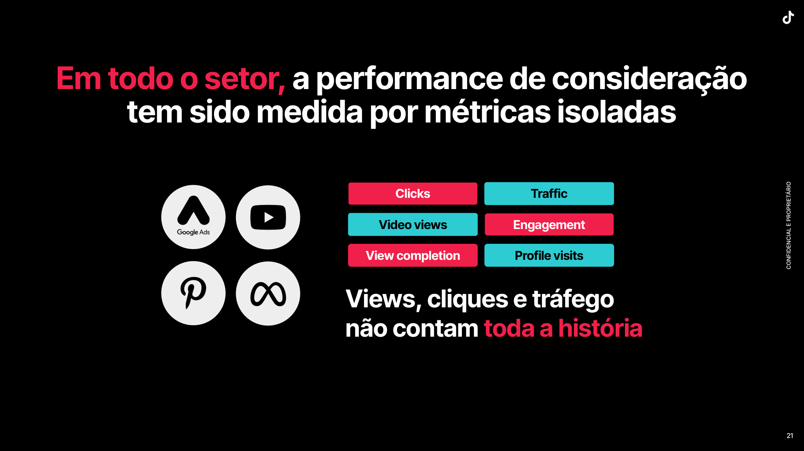
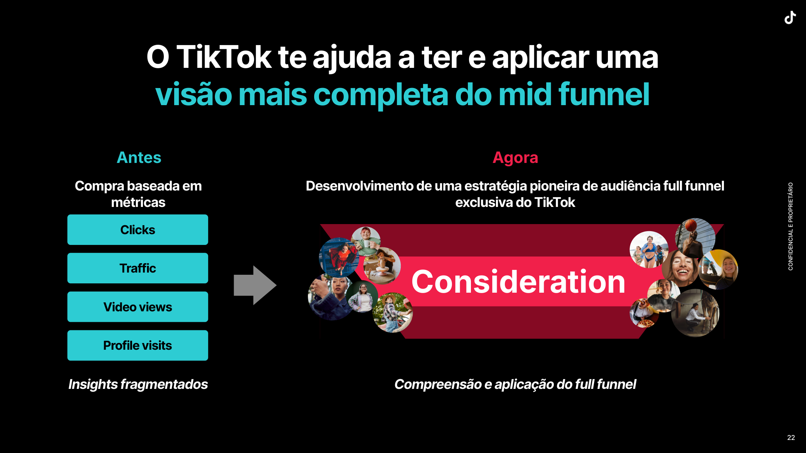
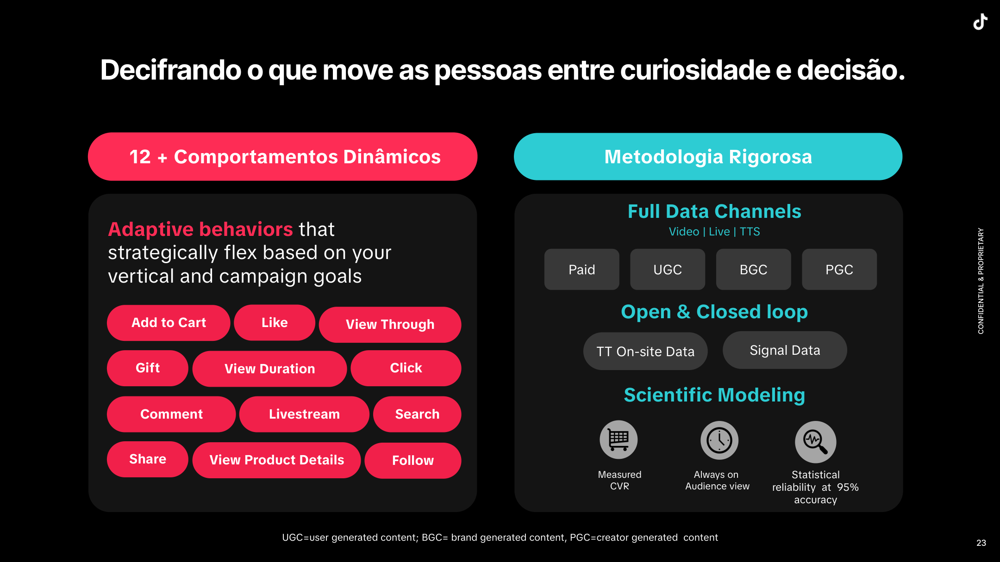
Brand Consideration Ads
É o formato que compra especificamente essa audiência: encontra quem tem alta intenção e ajusta o lance para mover a pessoa de "não explorado" ou "awareness" para consideração.
Nos testes da plataforma, comparado ao formato de Brand Auction focado em visualização de vídeo, ele entregou 18% mais taxa de nova consideração e custo por consideração 23% menor. Volta com detalhe na Aula 03, quando montarmos a estrutura de campanha.
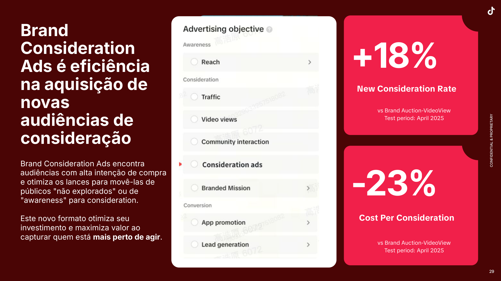
O calendário de campanhas da plataforma
O canal tem datas próprias, e elas puxam tráfego para quem está inscrito. Em 2026 o calendário de campanhas do TikTok Shop Brasil é este:
| Mês | Campanha |
|---|---|
| Janeiro | Ofertas de Volta às Aulas |
| Fevereiro | 2.2 Promo do Mês |
| Março | 3.15 Mega Campanha |
| Abril | 4.4 Promo do Mês |
| Maio | 5.5 Promo do Mês |
| Junho | 6.6 Mega Campanha |
| Julho | 7.7 Promo do Mês |
| Agosto | 8.8 Promo do Mês |
| Setembro | 9.9 Mega Campanha |
| Outubro | 10.10 Promo do Mês |
| Novembro | 11.11 e Black Friday |
| Dezembro | 12.12 Promo do Mês |
Além dessas, existem campanhas de marca que a loja pode pleitear: Super Brand Day, Grand Opening (para loja nova) e New Arrival Day (para lançamento). Os nomes e formatos podem mudar, confirme sempre no Seller Center.
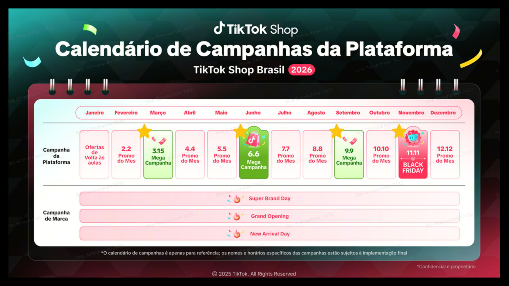
Como se organiza uma campanha grande
O erro é acordar no dia da data. Uma campanha de plataforma tem quatro fases, e a verba acompanha:
- Preparação, semanas antes: estoque, inscrição na campanha, briefing de creators, conteúdo gravado
- Campanha, cerca de 7 dias: verba de mídia por volta de 1,6x a do dia normal
- Pico, as 48 horas da virada da data: a maior concentração, algo como 1,7x
- Dias de categoria, cerca de 4 dias depois: mantém 1,6x, aproveitando o tráfego residual
- Revisão pós-campanha: o que vendeu, a que custo, o que repetir
O padrão que interessa é o formato, não os números exatos: sobe antes, concentra no pico, sustenta no rabo da campanha e revisa depois. Voltamos a isso na Aula 07, montando o calendário de 90 dias.
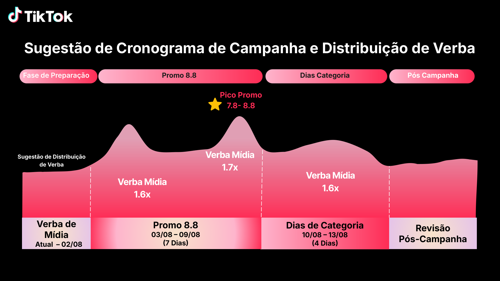
O limite diário de pedidos, que quase ninguém conhece
Loja nova entra num período de avaliação e opera com limite diário de pedidos. Ou seja: por melhor que o conteúdo funcione, existe um teto de vendas por dia até a conta provar que dá conta de entregar.
O acompanhamento fica em Desempenho da loja, dentro do Seller Center, e a subida de faixa depende de critérios como:
- tempo de loja aberta
- anúncios sem penalização
- volume de pedidos entregues
- número de compradores únicos
Há também uma avaliação a responder, com perguntas sobre responsabilidades do vendedor, prazos e regras de anúncio. Passar nela conta a favor.
Duas consequências práticas. Primeira: não adianta escalar mídia antes de subir o limite, o pedido simplesmente não entra. Segunda: essa é uma daquelas informações que o cliente não sabe que existe, e chegar com ela na primeira reunião posiciona a agência como quem conhece o canal por dentro.
KPIs do canal
| KPI | O que mede | Onde olha |
|---|---|---|
| GMV | Faturamento bruto do canal | Painel do seller |
| Pedidos e ticket | Tamanho e valor médio | Painel do seller |
| GMV por creator | Concentração de vendas | Aba de afiliados |
| Nº de creators ativos | Tamanho da rede vendendo | Aba de afiliados |
| Taxa de aceite de amostra | Eficiência do recrutamento | Controle próprio |
| GMV de live | Peso do live commerce | Painel de lives |
| Cancelamento e devolução | Saúde da operação | Painel de pedidos |
Erros comuns
- Deixar o showcase desativado, o que quebra a ponte entre conteúdo e produto
- Cadastrar produto sem variação, obrigando a criar produtos separados e diluir avaliações
- Ignorar a política de devolução e absorver custo depois
- Começar a recrutar creator antes de a loja estar aprovada para vender
O que levar pra semana
Loja configurada de ponta a ponta, com showcase ativo, programa de afiliados habilitado e painel de KPIs do canal aberto.
Roteiro
Antes da aula
- Confirmar que a 1ª parcela foi paga e que a agenda fixa de dia e horário está definida
- Deixar a conta inicial aberta e logada, para percorrer setup e showcase sem depender de aprovação
- Se for usar conta de cliente em algum bloco, confirmar a autorização e esconder dado sensível antes de compartilhar a tela
- Pedir os acessos com 3 dias úteis de antecedência e testar se entram
- Levantar quais categorias os alunos mais atendem e qual documentação cada uma exige
Os 60 minutos
| Tempo | Bloco | O que fazer |
|---|---|---|
| 00 a 05 | Abertura | Apresentar o desenho do programa, os 2 módulos, o ritual de fechamento e as regras de agenda |
| 05 a 12 | Ecossistema | Intenção contra descoberta, com exemplo do próprio catálogo |
| 12 a 22 | Funil e consideração | Os 87% de indecisos, a força do canal no meio do funil e o que muda quando se otimiza para consideração |
| 22 a 40 | Setup na tela | Percorrer o cadastro em uma conta real, campo a campo, mostrando onde reprova e por quê |
| 40 a 44 | Pós-aprovação | Mostrar os passos 4 a 7 e o que a agência adianta enquanto a conta é analisada |
| 44 a 53 | Custo da plataforma | Comissão, frete e taxa fixa, a curva do percentual efetivo por ticket e os custos que vêm junto |
| 53 a 58 | Calendário e KPIs | Mostrar as datas de 2026, o desenho de uma campanha em 4 fases e montar o painel do canal |
| 58 a 60 | Fechamento | Definir o que precisa ser aprovado antes da Aula 02 |
Aula cheia. Se o setup travar em pendência de documento, corte o bloco do calendário e jogue para a Aula 07, que é onde ele é aprofundado. Setup e custo da plataforma são os dois blocos que não podem sair.
O que mostrar na tela
Seller Center do TikTok Shop, aba de verificação, cadastro de produto, showcase no perfil e painel de afiliados.
Perguntas de checagem
- Sua categoria exige algum documento adicional para vender aqui?
- Seu perfil do TikTok já está vinculado à loja?
- Quantos dos seus produtos vendem abaixo de R$ 50, e você sabe quanto sobra deles depois de comissão, frete, taxa fixa e creator?
Fechamento
ATA na página da aula, checklist de setup e painel de KPIs anexados no site, gravação publicada, pendências de aprovação registradas com prazo.
Template
Checklist de abertura de loja
Este é o documento que você entrega ao cliente no dia 1 de qualquer projeto de TikTok Shop. Preencha as duas primeiras colunas agora, com a categoria que você mais atende.
Antes do cadastro, responsabilidade do cliente:
| Item | Quem providencia | Prazo típico | Reprova se |
|---|---|---|---|
| CNPJ ativo e cartão CNPJ | cliente | imediato | inativo ou irregular |
| Dados bancários | cliente | imediato | titularidade diferente do CNPJ |
| Documento do responsável legal | cliente | imediato | ilegível ou vencido |
| Documentação da categoria | cliente | varia | categoria regulada sem registro |
| Perfil do TikTok da marca | cliente ou agência | 1 dia |
Cadastro e análise:
| Etapa | Responsável | Depende de | Prazo |
|---|---|---|---|
| Cadastro do seller enviado | agência | documentos acima | 1 dia |
| Verificação de identidade | plataforma | análise | dias a 2 semanas |
| Categoria liberada | plataforma | análise | dias a 2 semanas |
Depois da aprovação:
| Etapa | Responsável | Entra na aula |
|---|---|---|
| Produtos e variações cadastrados | agência | 02 |
| Envio, prazos e devolução | agência | 02 |
| Perfil vinculado e showcase ativo | agência | 02 |
| Programa de afiliados habilitado | agência | 04 |
Materiais desta aula
| Material | Para que serve |
|---|---|
| Planilha de precificação | calcular margem com a régua de comissão, frete e taxa fixa |
| Guia de conta bancária | enviar ao cliente junto com a lista de documentos |
| Guia de acesso de colaborador | pedir acesso à loja sem compartilhar senha |
Painel de KPIs do canal
| KPI | Valor inicial | Meta 90 dias | Frequência de leitura |
|---|---|---|---|
| GMV | semanal | ||
| Pedidos | semanal | ||
| Ticket médio | semanal | ||
| Creators ativos | semanal | ||
| GMV do top creator | semanal | ||
| GMV de live | semanal | ||
| Cancelamento % | semanal |
Critério de aceite
O entregável está pronto quando o checklist de abertura está preenchido com prazos e responsáveis, pronto para ser enviado a um cliente sem nenhuma edição, e o painel de KPIs está montado com as metas que você usaria em um projeto real.
Não faz parte deste entregável ter uma loja aberta ou aprovada. O que se leva daqui é o método.
Registro
ATA · 12/08/2026
Talisson abriu apresentando a operação que dirige, com equipe de 76 pessoas atendendo cerca de 160 clientes, cada um com gestor dedicado, como contexto do que será ensinado. A estratégia se concentra na multicanalidade, utilizando plataformas como Mercado Livre, TikTok e Shopee. Talisson, líder da operação, destaca a importância do TikTok Shop e compartilha seu histórico, enfatizando a necessidade de uma abordagem estruturada para treinamento e conteúdo, além do gerenciamento eficaz de comissões e custos operacionais. O TikTok Shop exige CNPJ para abertura de contas e possui regras rigorosas sobre pedidos e conteúdos, com uma estrutura de comissões que varia conforme o preço dos produtos. Talisson também menciona a importância do engajamento através de lives e conteúdos de creators, além de uma gestão cuidadosa das campanhas de marketing.
O que foi coberto
- 👥 Contexto: a operação conduzida pelo Talisson tem 76 pessoas e cerca de 160 clientes em 3 marketplaces, com foco forte no TikTok Shop. É a base prática de onde sai o conteúdo da mentoria.
- 🛒 TikTok Shop: Exige CNPJ, limite de 50 pedidos/dia para contas novas, aprovação demora até 48h e pagamentos podem atrasar até 30 dias.
- 💰 Precificação e Comissões: Taxa total é 16% para produtos abaixo de R$50 e 12% para acima; afiliados podem receber até 20% de comissão.
- 🎥 Conteúdo e Lives: Estratégia combina vídeos da marca, creators e lives; subsídios chegam a 25% em descontos para impulsionar vendas.
- 📈 Marketing Pago: ROI no TikTok inclui vendas orgânicas influenciadas por ads; app via API ajuda separar vendas orgânicas e pagas.
- 📅 Calendário de Campanhas: Datas-chave com descontos de até 25%, exigem cadastro; ajudam a evitar queda de faturamento pós-evento.
O que ficou combinado
Talisson Leite Kayhara
- Disponibilizar material de apoio, planilhas e gravações no Vercel para acesso do time (01:10)
- ~~Enviar lista dos principais creators por nicho~~. Correção: não foi um compromisso, foi a demonstração do tipo de informação que se extrai do FastMoss (top do nicho, top dos nichos paralelos e top geral). O método está na Aula 04 (01:22:30)
- Compartilhar contatos de gerentes de conta relevantes para apoio com parceiros e clientes (08:20)
- Fornecer planilha detalhada de precificação TikTok para que o time possa customizar para cada cliente (01:16:40)
- Elaborar mentoria específico para execução e estratégias de live no TikTok (01:56:00)
- Preparar material explicativo sobre lógica de atribuição e análise de investimento em ads no TikTok (01:35:00)
Caue Oliveira
- Validar políticas e limites de faturamento com base no CPF em marketplaces (21:25)
- Suportar o time na negociação com gerentes para subida de teto de pedido para clientes que atingem limites (45:40)
Junior Weber
- Solicitar acesso à planilha de controle de métricas TikTok para consultas e análises futuras (46:30)
- Investigar e consolidar informações sobre uso e performance de afiliados e campanhas do TikTok para clientes (52:15)